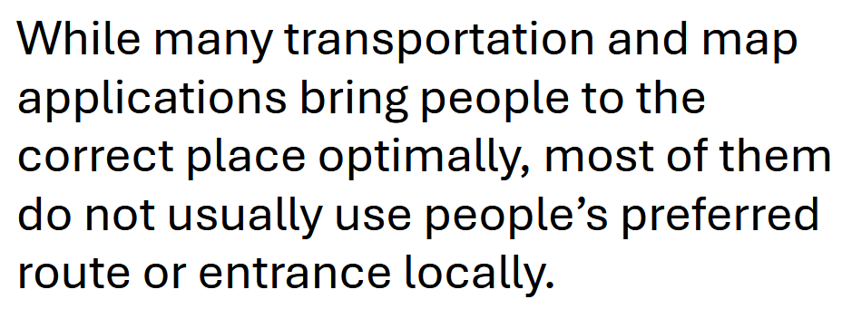
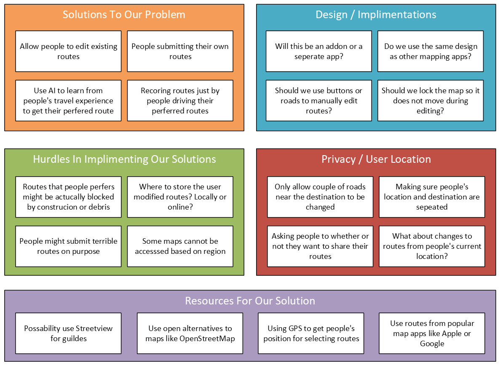
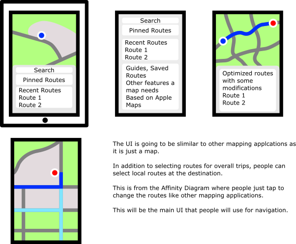
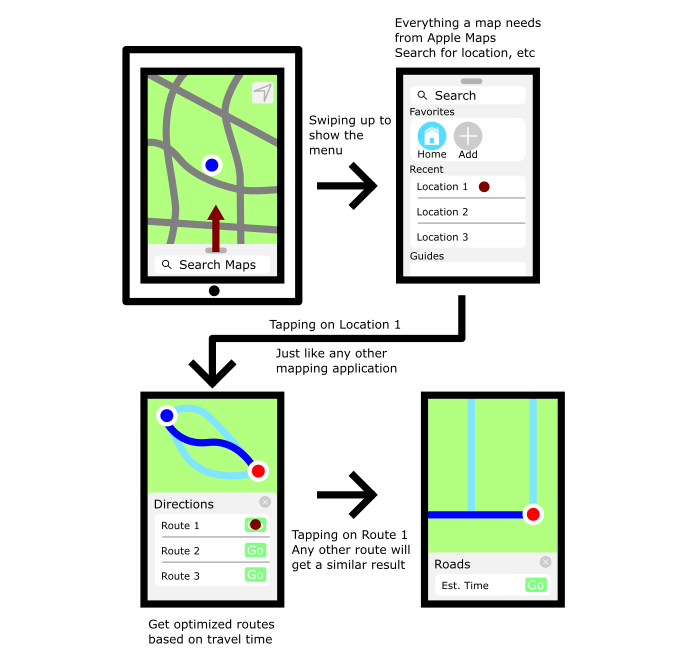

Project Statement
While many transportation and map applications bring people to the correct place optimally, most of them do not usually use people's preferred route or entrance locally.
Affinity Diagram
Solutions, resources, and issues like privacy that can be used to solve the problem of suggesting preferred routes.
Sketches
Digital sketches of how the application will be used by regular people who just want to go from one place to another, an employee managing the application on a desktop, and a person who might plan out most of their trips.
Prototype
Digital "paper" prototype detailing step-by-step on how people will use the application. The prototype is based on sketch one and three for mobile, and if the application is based on or an add-on for Apple Maps.
Code for Algorithmic Design II
 sbmehta converted to SVG from Sun Microsystems AI version., BSD,
via Wikimedia Commons
sbmehta converted to SVG from Sun Microsystems AI version., BSD,
via Wikimedia Commons
_waving.svg){kind=link}
Solutions for Algorithmic Design II labs and homework written in Java. It does not contain example text files and driver files.
Code for Unix/Linux Fundamentals
 User:Linuxerist, Public domain, via Wikimedia Commons
User:Linuxerist, Public domain, via Wikimedia Commons
{kind=link}
Solutions for Unix/Linux Fundamentals labs. Most of it are simple shell scripts and Makefile.